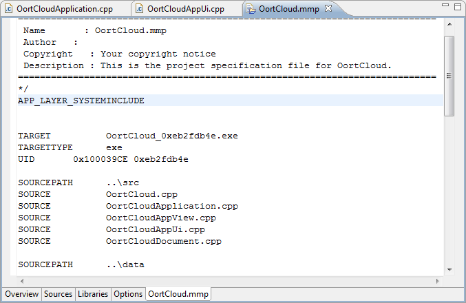

The MMP file tab in the MMP editor window shows the source text of the mmp file. Changes made directly in the mmp file are reflected in related tabs of the MMP editor and changes made in editor tabs are written to the mmp file. Errors are identified in red and markers are placed in mmp files at the locations errors exist.

Figure 1 - MMP Editor MMP File